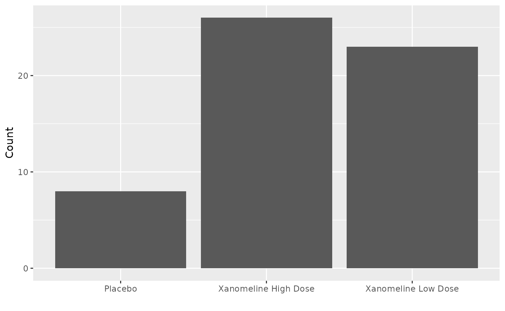

Overview
r2rtf is an R package to create production ready tables
and figures in RTF format. The R package is designed to
- provide simple “verb” functions that correspond to each component of a table, to help you translate data frame to table in RTF file.
- enable pipes (
%>%). - only focus on table format. Data manipulation and
analysis should be handled by other R packages. (e.g.,
tidyverse) -
r2rtfminimizes package dependency
Before creating an RTF table we need to:
- Figure out table layout.
- Split the layout into small tasks in the form of a computer program.
- Execute the program.
This document introduces r2rtf basic set of tools, and
show how to transfer data frames into Table, Listing, and Figure
(TLFs).
Other extended examples and features are covered in different document listed in vignettes.
Data: Adverse Events
To explore the basic RTF generation verbs in r2rtf, we
will use the dataset r2rtf_adae. This dataset contain
adverse events (AE) information from a clinical trial.
Below is the meaning of relevant variables. More information can be
found in help page of the dataset (?r2rtf_adae)
- USUBJID: Unique Subject Identifier
- TRTA: Actual Treatment
- AEDECOD: Dictionary-Derived Term
Table ready data
dplyr and tidyr packages are used for data
manipulation to create a data frame that contains all the information we
want to add in an RTF table.
Please note other packages can also be used for the same purpose.
In this AE example, we provide number of subjects with each type of AE by treatment group.
tbl <- r2rtf_adae %>%
count(TRTA, AEDECOD) %>%
pivot_wider(names_from = TRTA, values_from = n, values_fill = 0)
tbl %>% head(4)
## # A tibble: 4 × 4
## AEDECOD Placebo `Xanomeline High Dose` `Xanomeline Low Dose`
## <chr> <int> <int> <int>
## 1 ABDOMINAL PAIN 1 2 3
## 2 AGITATION 2 1 2
## 3 ALOPECIA 1 0 0
## 4 ANXIETY 2 0 4Single table verbs
r2rtf aims to provide one function for each type of
table layout. Commonly used verbs includes:
-
rtf_page: RTF page information -
rtf_title: RTF title information -
rtf_colheader: RTF column header information -
rtf_body: RTF table body information -
rtf_footnote: RTF footnote information -
rtf_source: RTF data source information
All these verbs are designed to enables usage of pipes
(%>%). A full list of all functions can be found in the
package
reference.
Simple Example
A minimal example below illustrates how to combine verbs using pipes to create an RTF table.
-
rtf_body()defines table body layout. -
rtf_encode()transfers table layout information into RTF syntax. -
write_rtf()saves RTF encoding into a file with file extension.rtf.
Column Width
If we want to adjust the width of each column to provide more space
to the first column, this can be achieved by updating
col_rel_width in rtf_body.
The input of col_rel_width is a vector with same length
for number of columns. This argument defines the relative length of each
column within a pre-defined total column width.
In this example, the defined relative width is 3:2:2:2. Only the
ratio of col_rel_width is used. Therefore it is equivalent
to use col_rel_width = c(6,4,4,4) or
col_rel_width = c(1.5,1,1,1).
head(tbl) %>%
rtf_body(col_rel_width = c(3, 2, 2, 2)) %>%
# define relative width
rtf_encode() %>%
write_rtf("rtf/intro-ae2.rtf")Note:
- The
col_rel_widthin thertf_body()function only control relative width of table body. Therefore the column header is not aligned as expected. More details will be provided in next example to take care of column header width. - The total column width is defined in the
col_widthargument of thertf_page()function.
Column Headers
In the previous example, we found an issue of misaligned column
header. We can fix the issue by using the rtf_colheader()
function.
In rtf_colheader, colheader argument is
used to provide content of column header. We used "|" to
separate the columns.
head(tbl) %>%
rtf_colheader(
colheader = "Adverse Events | Placebo | Xanomeline High Dose | Xanomeline Low Dose",
col_rel_width = c(3, 2, 2, 2)
) %>%
rtf_body(col_rel_width = c(3, 2, 2, 2)) %>%
rtf_encode() %>%
write_rtf("rtf/intro-ae3.rtf")We also allow column headers be displayed in multiple lines. If an
empty column name is needed for a column, you can insert a space between
two vertical lines; e.g., "name 1 | | name 3".
The col_rel_width can be used to align column header
with different number of columns.
By using rtf_colheader with col_rel_width,
one can customize complicated column headers. If there are multiple
pages, column header will repeat at each page by default.
head(tbl, 50) %>%
rtf_colheader(
colheader = " | Treatment",
col_rel_width = c(3, 6)
) %>%
rtf_colheader(
colheader = "Adverse Events | Placebo | Xanomeline High Dose | Xanomeline Low Dose",
col_rel_width = c(3, 2, 2, 2)
) %>%
rtf_body(col_rel_width = c(3, 2, 2, 2)) %>%
rtf_encode() %>%
write_rtf("rtf/intro-ae4.rtf")Text Alignment
In rtf_*() functions such as rtf_body(),
rtf_footnote(), the text_justification
argument is used to align text. Default is "c" for center
justification. To vary text justification by column, use character
vector with length of vector equal to number of columns displayed (e.g.,
c("c","l","r")).
All possible inputs can be found in the first column of
r2rtf:::justification().
r2rtf:::justification()
## type name rtf_code_text rtf_code_row
## 1 l left \\ql \\trql
## 2 c center \\qc \\trqc
## 3 r right \\qr \\trqr
## 4 d decimal \\qj
## 5 j justified \\qjBelow is an example that makes the first column left-aligned and center-aligned for the rest.
Text Style
In rtf_*() functions such as rtf_body(),
rtf_footnote(), etc., the text_format argument
is used for controlling text style. Default is NULL for
normal.
All possible inputs and corresponding text style can be found in
r2rtf:::font_format().
r2rtf:::font_format()
## type name rtf_code
## 1 normal
## 2 b bold \\b
## 3 i italics \\i
## 4 u underline \\ul
## 5 s strike \\strike
## 6 ^ superscript \\super
## 7 _ subscript \\subCombination of format type are permitted as input (e.g.,
"ub" for bold and underlined text). To vary text format by
column, use character vector with length of vector equal to number of
columns displayed (e.g., c("i", "u", "ib")).
Below is an example to make first column in bold and normal for the rest.
Table Border
In rtf_*() functions such as rtf_body(),
rtf_footnote(), etc., border_left,
border_right, border_top, and
border_bottom control the border.
In example of intro-ae4.rtf, if we want to remove the
top border of "Adverse Events" in header, we can change
default value "single" to "" in
border_top argument as shown below.
All possible border type inputs can be found in
r2rtf:::border_type(). There are 26 different border types
and we only display the first six here.
head(r2rtf:::border_type())
## name rtf_code
## 1
## 2 single \\brdrs
## 3 double \\brdrdb
## 4 dot \\brdrdot
## 5 dash \\brdrdash
## 6 small dash \\brdrdashsm
head(tbl) %>%
rtf_colheader(
colheader = " | Treatment",
col_rel_width = c(3, 6)
) %>%
rtf_colheader(
colheader = "Adverse Events | Placebo | Xanomeline High Dose | Xanomeline Low Dose",
border_top = c("", "single", "single", "single"),
col_rel_width = c(3, 2, 2, 2)
) %>%
rtf_body(col_rel_width = c(3, 2, 2, 2)) %>%
rtf_encode() %>%
write_rtf("rtf/intro-ae7.rtf")Title
The title(s) can be added using the rtf_title() function
as showed in below example. To get guidance on how to change title text
style, aligning title, and other features in the
rtf_title() function, help page
?r2rtf::rtf_title() is a good resource.
We can provide a vector for the title argument. Each
value is a separate line. The format can also be controlled by providing
a vector input in text_format.
We used soft return to break lines in title.
head(tbl) %>%
rtf_title(
title = c(
"Adverse Event Count by Treatment Group",
"(An example)"
),
text_format = c("b", "")
) %>%
rtf_colheader(
colheader = "Adverse Events | Placebo | Xanomeline High Dose | Xanomeline Low Dose",
col_rel_width = c(3, 2, 2, 2)
) %>%
rtf_body(col_rel_width = c(3, 2, 2, 2)) %>%
rtf_encode() %>%
write_rtf("rtf/intro-ae8.rtf")Footnote
The footnote(s) can be added using footnote argument in
the rtf_footnote() function as showed in below example.
We can provide a vector for the footnote argument. Each
value is a separate line.
Below example showed the case when using as_table = TRUE
(default) to display footnote inside the table body.
head(tbl) %>%
rtf_title(title = "Adverse Event Count by Treatment Group") %>%
rtf_colheader(
colheader = "Adverse Events | Placebo | Xanomeline High Dose | Xanomeline Low Dose",
col_rel_width = c(3, 2, 2, 2)
) %>%
rtf_footnote(
footnote = c(
"Adverse events are coded according to MedDRA version 23.0",
"adam-adae"
),
as_table = TRUE
) %>%
rtf_body(col_rel_width = c(3, 2, 2, 2)) %>%
rtf_encode() %>%
write_rtf("rtf/intro-ae9.rtf")Below example showed the case when using
as_table = FALSE to display footnote outside the table
body.
head(tbl) %>%
rtf_title(title = "Adverse Event Count by Treatment Group") %>%
rtf_colheader(
colheader = "Adverse Events | Placebo | Xanomeline High Dose | Xanomeline Low Dose",
col_rel_width = c(3, 2, 2, 2)
) %>%
rtf_footnote(
footnote = c(
"Adverse events are coded according to MedDRA version 23.0",
"adam-adae"
),
as_table = FALSE
) %>%
rtf_body(col_rel_width = c(3, 2, 2, 2)) %>%
rtf_encode() %>%
write_rtf("rtf/intro-ae10.rtf")Data Source
Data source can be added using source argument in the
rtf_source() function as showed in below example.
Below example showed the case when using
as_table = FALSE (default) to display data source outside
the table body.
We can also adjust data source to be left aligned. By default the alignment matches the table border.
head(tbl) %>%
rtf_page(col_width = 5) %>%
# set total column width
rtf_title(title = "Adverse Event Count by Treatment Group") %>%
rtf_colheader(
colheader = "Adverse Events | Placebo | Xanomeline High Dose | Xanomeline Low Dose",
col_rel_width = c(3, 2, 2, 2)
) %>%
rtf_source(
source = "[datasource: adam-adae]",
text_justification = "l",
as_table = FALSE
) %>%
rtf_body(col_rel_width = c(3, 2, 2, 2)) %>%
rtf_encode() %>%
write_rtf("rtf/intro-ae11.rtf")Below example showed the case when using as_table = TRUE
to display data source inside the table body.
head(tbl) %>%
rtf_title(title = "Adverse Event Count by Treatment Group") %>%
rtf_colheader(
colheader = "Adverse Events | Placebo | Xanomeline High Dose | Xanomeline Low Dose",
col_rel_width = c(3, 2, 2, 2)
) %>%
rtf_source(
source = "[datasource: adam-adae]",
as_table = TRUE
) %>%
rtf_body(col_rel_width = c(3, 2, 2, 2)) %>%
rtf_encode() %>%
write_rtf("rtf/intro-ae12.rtf")Special Character
In the r2rtf package, '^' is a character to
be converted to rtf code '\\super' to generate superscript;
'_' is for subscript.
Similarly, '<=' is a r2rtf package
specified character to be converted to LaTeX command
'\\leq' to generate special character \(\leq\).
LaTeX commands can be used for Greek letters and math symbol such as
\(\alpha\), \(\pm\), \(\infty\). You will need to use double
backslash \\ to escape backslash in R.
i.e. "\\alpha", "\\pm" and
"\\infty". A list of LaTeX commands can be found here.
Example below demonstrates this idea.
head(tbl) %>%
rtf_title(title = "Adverse Event Count by Treatment Group{^a}") %>%
rtf_colheader(
colheader = "Adverse Events{\\super 1} | Placebo | Xanomeline High Dose | Xanomeline Low Dose",
col_rel_width = c(3, 2, 2, 2)
) %>%
rtf_footnote(
footnote = c(
"{\\super 1}Adverse events are coded according to MedDRA 20.0{<=}version {\\leq}23.0",
"\\alpha + \\gamma <= \\infty",
"{^a}adam-adae"
),
as_table = FALSE
) %>%
rtf_body(col_rel_width = c(3, 2, 2, 2)) %>%
rtf_encode() %>%
write_rtf("rtf/intro-ae13.rtf")Table Color
Each cell’s text and background color are adjustable. Take
intro-ae13.rtf as an example. If we want to add gray
background color to cells with 0 AE, we need to create a color name
matrix corresponding to each cell in table body.
Then we need to assign this background color matrix to
text_background_color argument in the
rtf_body() function as shown below.
Note:
- When creating a color name matrix, each element needs to be a color
name defined in
grDevices::colours().
tbl1 <- head(tbl)
color_matrix <- ifelse(trimws(apply(tbl1, 2, as.character)) == "0", "gray", "white")
color_matrix
## AEDECOD Placebo Xanomeline High Dose Xanomeline Low Dose
## [1,] "white" "white" "white" "white"
## [2,] "white" "white" "white" "white"
## [3,] "white" "white" "gray" "gray"
## [4,] "white" "white" "gray" "white"
## [5,] "white" "white" "white" "white"
## [6,] "white" "white" "white" "white"
tbl1 %>%
rtf_title(title = "Adverse Event Count by Treatment Group") %>%
rtf_colheader(
colheader = "Adverse Events | Placebo | Xanomeline High Dose | Xanomeline Low Dose",
col_rel_width = c(3, 2, 2, 2)
) %>%
rtf_body(
col_rel_width = c(3, 2, 2, 2),
text_background_color = color_matrix
) %>%
rtf_encode() %>%
write_rtf("rtf/intro-ae14.rtf")Page setup
The total number of rows in each page can be controlled in
nrow argument of rtf_page() function. Every
lines is counted including title, subline, header, body, footnote,
source, and extra rows.
The value in nrow is the maximum number of rows allowed
in one page, the actual rows display can be slightly smaller.
tbl[1:50, ] %>%
rtf_page(nrow = 40) %>%
rtf_title(title = "Adverse Events Example") %>%
rtf_colheader(
colheader = "Adverse Events | Placebo | Xanomeline High Dose | Xanomeline Low Dose",
col_rel_width = c(3, 1, 1, 1)
) %>%
rtf_body(
col_rel_width = c(3, 1, 1, 1),
text_justification = c("l", "c", "c", "c")
) %>%
rtf_encode() %>%
write_rtf("rtf/intro-ae15.rtf")subline_by feature
Users can use the subline_by argument in the
rtf_body() function to group table by assigning the
subline_by variable.
A subject line will be displayed at the beginning of each page based
on the variable provided to subline_by. Different values of
subline_by will be broken into different pages.
Below example shows using treatment group as the
subline_by variable.
aegt5 <- r2rtf_adae %>%
group_by(TRTA, AEDECOD) %>%
summarise(Count = n_distinct(USUBJID)) %>%
filter(Count > 7) %>%
ungroup() %>%
arrange(TRTA, desc(Count))
head(aegt5)
## # A tibble: 6 × 3
## TRTA AEDECOD Count
## <chr> <chr> <int>
## 1 Placebo DIARRHOEA 9
## 2 Placebo ERYTHEMA 9
## 3 Placebo PRURITUS 8
## 4 Xanomeline High Dose PRURITUS 26
## 5 Xanomeline High Dose APPLICATION SITE PRURITUS 22
## 6 Xanomeline High Dose APPLICATION SITE ERYTHEMA 15
aegt5 %>%
rtf_title(title = "Top Adverse Events by Treatment Group") %>%
rtf_colheader(colheader = "Adverse Events|Count") %>%
rtf_body(subline_by = "TRTA") %>%
rtf_encode() %>%
write_rtf("rtf/intro-ae16.rtf")page_by feature
Users can use page_by argument in the
rtf_body() function to group/separate table by single cell
row with assigned page_by variable’s value in it.
A row header will be generated at the beginning of each
page_by group.
If new_page = TRUE, different values of
group_by will be broken into different pages. Default is
FALSE.
Below example showed using treatment group as page_by
variable.
aegt5 %>%
rtf_title(title = "Top Adverse Events by Treatment Group") %>%
rtf_colheader(colheader = "Adverse Events|Count") %>%
rtf_body(
page_by = "TRTA",
new_page = TRUE
) %>%
rtf_encode() %>%
write_rtf("rtf/intro-ae17.rtf")group_by feature
Users can use the group_by argument in the
rtf_body() function to display once for group variable.
Below example shows using treatment group as group_by
variable.
Figure
The last example showed how to insert a figure into a RTF document.
The workflow can be summarized as:
- Save figures into PNG format. (e.g. using
png()orggplot2::ggsave()). - Read PNG files into R as binary file using
rtf_read_figure(). - Add optional features using
rtf_title(),rtf_footnote(),rtf_source(). - Set up page and figure options using
rtf_figure(). - Convert to rtf encoding using
rtf_encode(doc_type = "figure"). (Note: it is important to setdoc_type = "figure"as the default isdoc_type = "tableto set up tables). - Write rtf to a file using
write_rtf().
pruritus <- r2rtf_adae %>%
filter(AEDECOD == "PRURITUS") %>%
group_by(TRTA, AEDECOD) %>%
summarise(Count = n_distinct(USUBJID))
fig <- ggplot(data = pruritus, aes(x = TRTA, y = Count)) +
xlab("") +
geom_bar(stat = "identity")
fig
filename <- "fig/intro-fig1.png"
ggsave(filename, fig)
## Saving 7.29 x 4.51 in image
filename %>%
rtf_read_figure() %>%
rtf_title("Pruritus Frequency by Treatment Group") %>%
rtf_footnote("footnote here") %>%
rtf_source("[datasource: adam-adae]") %>%
rtf_figure() %>%
rtf_encode(doc_type = "figure") %>%
write_rtf("rtf/intro-ae19.rtf")